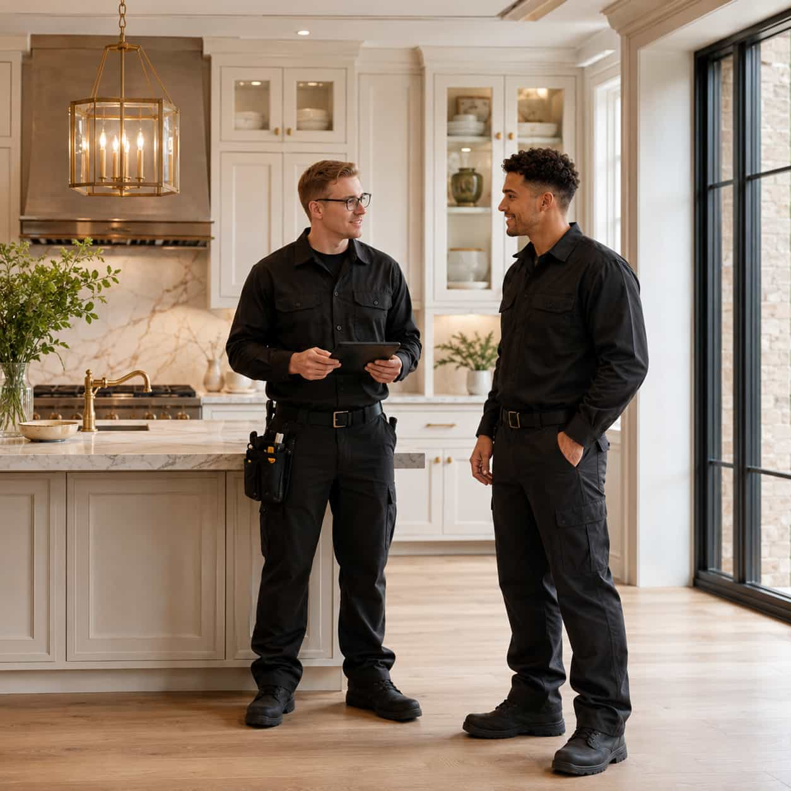
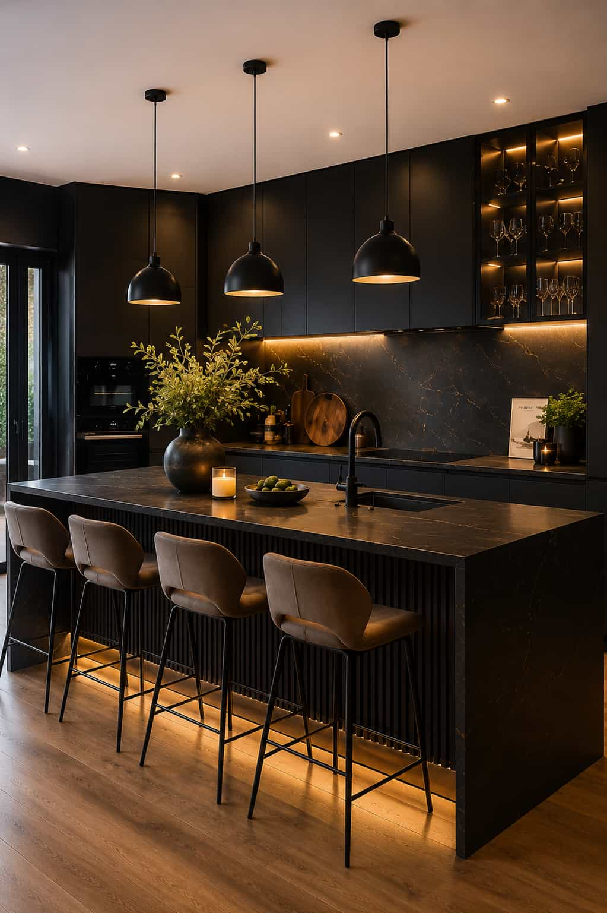
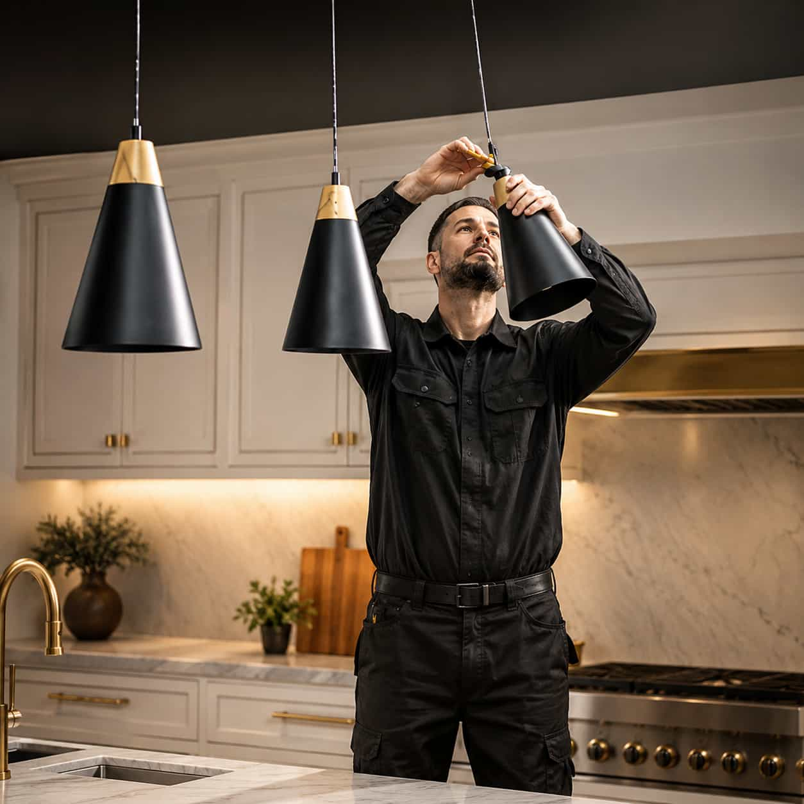
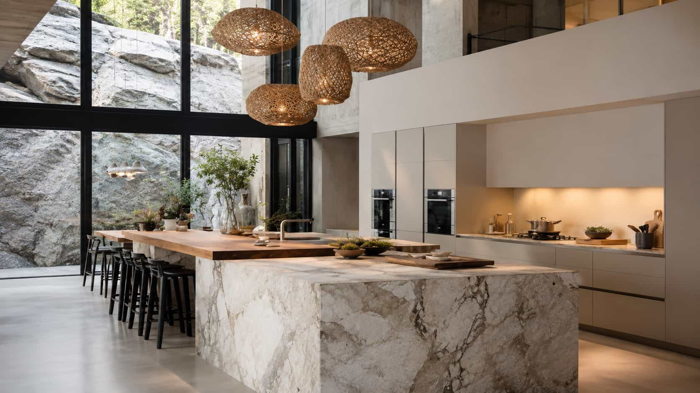

Start with a clear kitchen request before comparing possible provider.
ABOUT CASAKITCH
A clearer way to start your kitchen remodel request
CasaKitch gives homeowners a clearer starting point for comparing kitchen remodeling provider options without acting as a contractor, installer, retailer, or remodeling company.

01
Full Kitchen Remodeling
Compare provider options for full kitchen updates, layout changes, cabinets, surfaces, lighting, and more.
02Cabinet Replacement
Review cabinet-focused paths for storage, finish direction, hardware, and cleaner kitchen organization.
03Countertop Installation
Compare countertop provider paths for quartz, marble-inspired surfaces, stone, and edge details.
04Kitchen Island Design
Start an island-focused request around seating, storage, surfaces, lighting, and better layout flow.

WHY CASAKITCH?
A clearer way to start a kitchen remodeling request
CasaKitch helps homeowners organize project ideas before choosing a provider path. Whether you are thinking about cabinetry, countertops, island updates, tile details, or lighting, the platform gives you a cleaner starting point for comparing local options.
Instead of trying to figure everything out alone, you can begin with your goals, preferred style, timing, and service direction — then move forward with a more structured request.
View Our ServicesOrganize style, timing, materials, and layout notes in one simple point.
Compare local provider options without CasaKitch acting as a direct.
Keep the choice in your hands while reviewing the path that fits your project.
Move from scattered ideas to a more polished and structured kitchen request.
HOW IT WORKS
A clearer kitchen remodeling path in three simple steps
Share Your Project
Describe your kitchen goals, preferred service category, material direction, timing, and any layout notes.
Compare Options
Review provider paths that match your request and compare details before moving forward.
Choose Your Direction
Decide which provider direction best fits your kitchen goals, timeline, style, and project expectations.

Organize style, timing and layout notes in one point.
Keep the choice in your hands while reviewing local paths.
We organizes the request, not the remodeling.

HOMEOWNER NOTES
Our Happy Customers
These notes reflect the early request and comparison experience — CasaKitch helps homeowners organize project details and compare provider options.
Working with your design team was an absolute pleasure. The attention to detail and creativity exceeded my expectations. Thank you for making my home beautiful!
Sophie Carter
ClientExceptional service from the initial consultation to the final reveal. Your team demonstrated professionalism and a keen eye for design. Highly recommend!
Amelia Bennett
ClientCasaKitch helped me organize my cabinet and countertop ideas before comparing provider options. The process felt much clearer.
Hannah Reed
HomeownerThe request path made it easier to explain the island, lighting, and storage changes I wanted for my kitchen.
Olivia Morgan
HomeownerI was not sure which service category fit my kitchen update. CasaKitch helped me frame the request more clearly.
Natalie Brooks
HomeownerThe platform gave me a simple starting point for comparing provider paths for countertops, backsplash, and lighting.
Emma Lawson
HomeownerCOMMON QUESTIONS
Frequently asked about questions
CasaKitch focuses on helping homeowners compare provider options, not on performing kitchen remodeling work directly.
CasaKitch does not perform remodeling work. It is an independent aggregator that helps homeowners submit kitchen remodeling requests and compare local provider options.
Yes. You can compare provider paths for full kitchen remodeling, cabinet replacement, countertops, kitchen islands, backsplash and tile, and lighting or fixture updates.
No. You can start with general goals, preferred materials, style inspiration, layout notes, and the service category that feels closest to your project.
Useful details include kitchen size, current pain points, preferred materials, timeline, service category, photos if available, and any design direction you already have in mind.